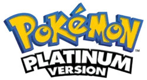
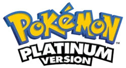

-
Gen II
-
Gen IV
You may be wondering why generation two is on this list, as I said that the first method came about in
generation 4.
Well... thats because in generation two, its less of a method, and more of an event. In
specifically Pokemon Crystal, you could pick up the Odd Egg from the Daycare Man. From this
egg,
you roughly had a 7% chance to bag one of seven different available pokemon. It is good to note
that you could only get one of these eggs per save file without any glitches.
In generation 4 they added the first shiny hunting method, PokeRadar. This was a monumental leap forward,
as before this, you could only hunt for these shiny pokemon at full odds, which was 1 in 8192!
With this method, you could hunt the pokemon available on any route, plus a few pokemon that are
unique to the PokeRadar itself. Learning how to properly hunt using this method can certianly take some
time.
There are many different factors to consider when using this method, as....
 
return to top

return to top